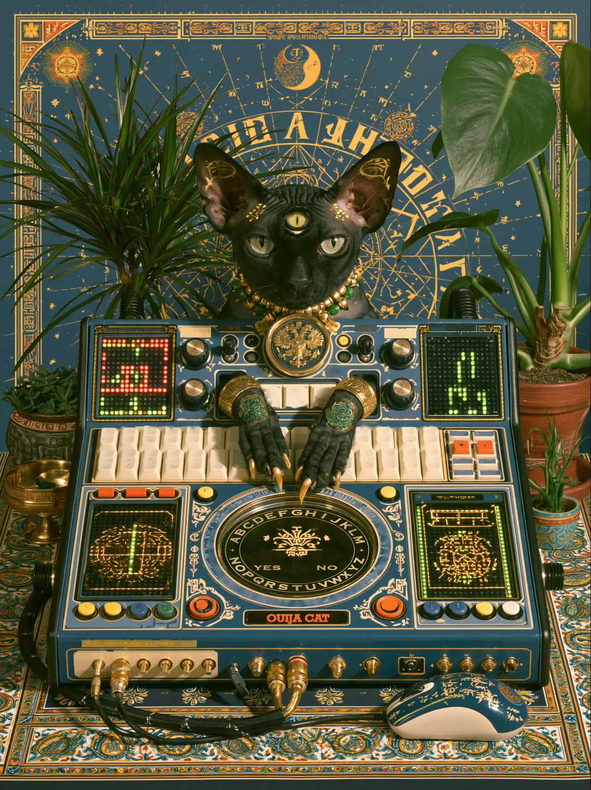

Telepathic transmission

Monitoring Spirits : Commune with Ouija Cat
Headphones on. Don't be lazy.
shhh… listening
The field is the room, the radio, the machine and the sky read as one thing. When systems with no reason to move together start moving together, it gets stronger. Take a reading: one silent minute.
It measures how strongly sensors that have nothing to do with each other rise and fall together. When they do, pay attention.
Look into the corridor. Say it once, quietly: Suzhenyi-ryazhenyi, pridi ko mne uzhinat'. Come to me for supper. Then don't look away. Don't blink either.
Your camera is the mirror. Nothing's recorded. The figure is drawn by the instrument and only moves when your room really breaches.
Write what you want like it’s already done. He strikes the repeats, fuses the rest, charges it with your room, then burns it. You won’t see it again.
Every reading deals a card from its own seed, so the same reading always deals the same card. Rarer readings, rarer cards. Mythic ones only show up when something real happens while he listens. Saved in this browser only.
Every value is measured on this Mac, ten times a second. z is how many standard deviations a sensor sits from its own recent normal; past 4 it counts as a breach. Nothing is recorded.